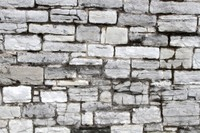
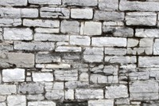
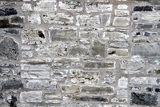
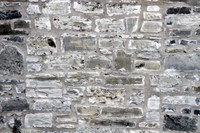
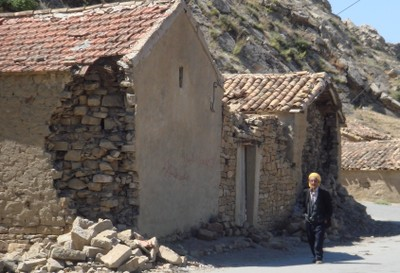

Limestone [SPLI]
Limestone is a sedimentary rock made primarily of the mineral calcite (calcium carbonate). Limstones are usually white or grey, but maybe coloured brown, yellow, or red or blueish, grey, or black (due to iron oxides or carbon). Most limestones are usually fine grained and featureless, but may also be medium to coarse grained, or contain fossils. Because calcite is a not much harder than a fingernail, limestones are generally soft and can be scratched with metal easily. A diagnostic characteristic of limestone is that it effervesces (bubbles) when in contact with a solution of weak (5%) hydrochloric acid.

Limestone blocks used for stone masonry construction, Algeria (M. Farsi)

Loadbearing masonry walls built using limestone - note hewn stones in the corners and wooden lintels, Pylos, South West Peloponnese, Greece (A. Pomonis)

Limestone wall construction, school building, Nepal (M. Schildkamp)


Limestone masonry, multi-family housing, Kingston, Ontario, Canada (J. Lee)
 

Limestone masonry, single-family home, Kingston, Ontario, Canada (J. Lee)
 

Limestone masonry, single-family housing, Kingston, Ontario, Canada (J. Lee)


Limestone masonry construction, church, Kingston, Ontario, Canada (J. Lee)

Limestone masonry wall in Ben-Daoud damaged in the 2010 Algeria earthquake (M. Farsi)

Limestone masonry wall in Beni-Ourtilane damaged in the 2000 earthquake (M. Farsi)

Limestone wall construction, Italy (S. Brzev)

Limestone masonry walls in a six-storey residential building, Nice, France (S. Brzev)